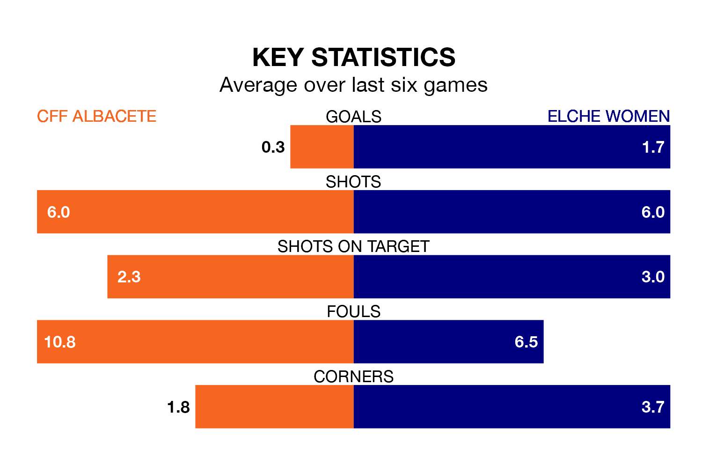

CFF Albacete host Elche Women in Sunday's late match looking to bounce back from defeat last time out in Segunda Federación Femenina.
CFF Albacete, who sit zero in the league after 18 games, fell to a 1-0 away defeat to Unión Viera Women on January 28.
They face an Elche side who also lost their last match, a 3-1 defeat to Femarguín Women, and who sit 13th in the table.
With 33 goals in 17 games so far this season, Elche are the league's second-highest scorers with 1.9 goals per game. But they are conceding more than average too, letting in 25 goals at a rate of 1.5 per game.
CFF Albacete, meanwhile, are below average scorers, with 0.7 goals per game, compared to a league average of 1.3. They have conceded 1.9 goals per game.
The hosts are in bad form in Segunda Federación Femenina, with one win and five losses from their last six games.
With three wins and a draw over that period, the away side's form is much better – they have taken 10 points from 18, compared to CFF Albacete's three.
Updated: 13:20 (UTC), 29/01/24